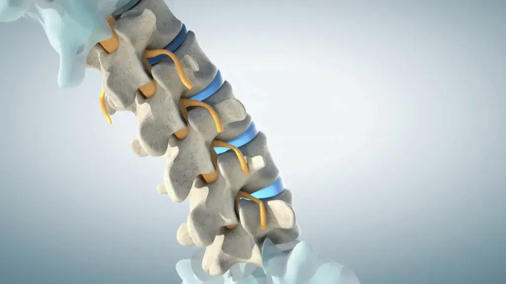

09 marca 2026
Schorzenia kręgosłupa – powszechny problem XXI wieku
W dzisiejszych czasach, gdy większość z nas spędza długie godziny przed komputerem, a aktywność fizyczna często schodzi na dalszy plan, problemy z kręgosłupem stały się niemalże chorobą cywilizacyjną. Ból pleców, sztywność karku, rwa kulszowa – to dolegliwości dotykające miliony osób.
Czytaj więcej